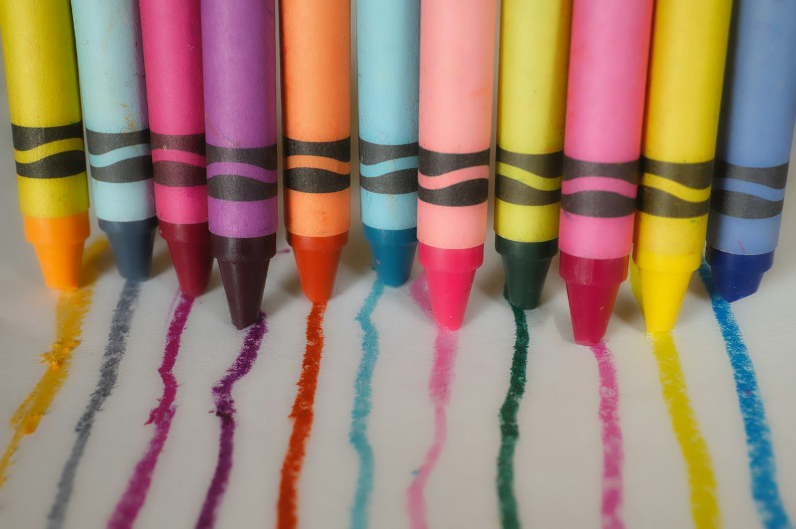

イメージ写真
かみのてKIDS
児童発達支援／放課後等デイサービス- 所在地
- 岐阜県可児市土田2569-2
- 電話
- 0574-66-3513
- 定員
- 10名
- 利用時間
- 9:00−18:00（月〜金）
10:00−16:00（土）

ことばも、からだの使い方も、人との関わり方も。
得意なことを入口にして、毎日のくらしの中で少しずつ育てていきます。
2つの事業所があります
ことばがゆっくりで、まわりのお子さんとの差が気になる
気持ちの切り替えがむずかしく、集団に入りにくい
手先や体の使い方に不安がある
学校のあと、安心して過ごせる居場所がほしい
日本語が第一言語ではなく、どこに相談すればよいか分からない
診断はまだだが、家庭だけで抱えるのが不安になってきた
ひとつでも当てはまれば、まずはご相談ください。受給者証をお持ちでない段階でも大丈夫です。

国が定める5つの領域すべてを見ながら、そのお子さまに必要なところを厚く支援します。訓練の時間をつくるのではなく、あそびと毎日の生活の中に組み込んでいくのが基本です。
可児市・美濃加茂市には外国にルーツを持つ方が多く暮らしています。かみのてには通訳スタッフがいて、制度の説明も日々の連絡も母語でお伝えできます。受給者証の申請や学校とのやりとりも、分かるところまでいっしょに進めます。法人が特定技能の登録支援機関として外国人材を支えてきた経験が、そのまま活きている部分です。

どちらも見学・体験を受け付けています。

ご利用にはお住まいの市町村が発行する「通所受給者証」が必要です。お持ちでない場合も、申請の進め方からご案内しますのでご安心ください。
費用の大部分は自治体の給付でまかなわれ、ご負担は原則1割です。世帯の所得に応じて月ごとの上限額が決まっているため、上限を超えるお支払いは発生しません。
児童発達支援・放課後等デイサービスの事業者に義務づけられている公表です。支援プログラムはかみのてKIDS・かみのてSMILE共通、自己評価と保護者評価は児童発達支援と放課後等デイサービスに分けて掲載しています。
支援プログラム PDF更新について。自己評価結果と保護者評価は年1回（3月）に更新します。御社で作成いただいたデータをお預かりし、こちらでPDFを差し替えて年度表示を更新します。支援プログラムは、内容を変更されたときに随時差し替えます。
児童指導員、保育士、そして多言語の支援を担うスタッフ。ちがう強みを持った人が集まることで、支援の幅が広がっています。一日の仕事の流れや、職員へのインタビューをまとめました。
どんな場所で、どんなふうに過ごすのか。見ていただくのがいちばん分かりやすいです。
受給者証をお持ちでなくても、診断がまだでも、ご相談だけでかまいません。